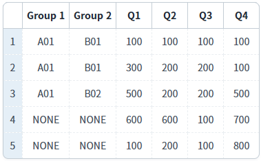
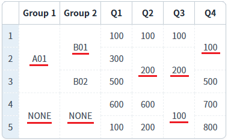
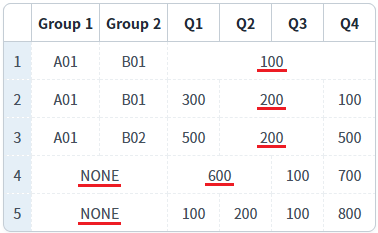
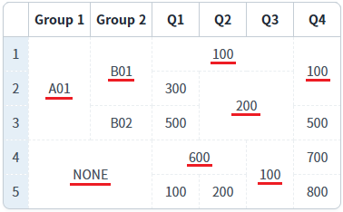
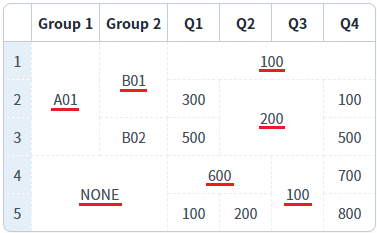
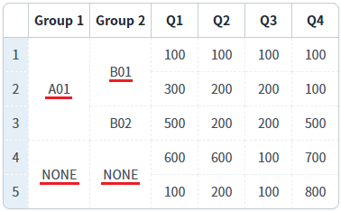
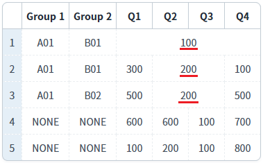
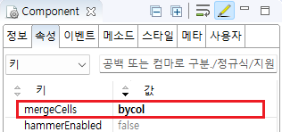

GridView의 'mergeCell' 속성 설정에 따른 동작을 비교할 수 있는 예제입니다. 이 속성은 셀의 병합 기능을 제공합니다. GridView에 동일한 DataList를 연결하였습니다. 설정 값에 따라 GridView에 출력되는 데이터의 모양을 확인합니다.
'mergeCells' 속성의 설정 값에 따른 기능은 다음과 같습니다.
never: 자동 병합을 사용하지 않음.
bycol: column 내에서 연속적으로 데이터가 같은 cell들을 병합.
byrow: row 내에서 연속적으로 데이터가 같은 cell들을 병합.
bycolrec: 'bycol' 조건을 적용하고, 병합되지 않은 cell들을 대상으로 'byrow' 조건을 적용.
byrowrec: 'byrow' 조건을 적용하고, 병합되지 않은 cell들을 대상으로 'bycol을' 조건을 적용.
byrestriccol: column 내에서 연속적으로 데이터가 같은 cell을 병합. 두 번째 컬럼부터 왼쪽의 컬럼이 병합된 경우만 적용.
byrestricrow: row 내에서 연속적으로 데이터가 같은 cell을 병합. 두 번째 행부터 상위(현재 행-1) 행이 병합된 경우만 적용.
'mergeCells' 속성을 'never'로 설정한 병합 예시
'mergeCells' 속성을 'bycol'로 설정한 병합 예시
'mergeCells' 속성을 'byrow'로 설정한 병합 예시
'mergeCells' 속성을 'bycolrec'로 설정한 병합 예시
'mergeCells' 속성을 'byrowrec'로 설정한 병합 예시
'mergeCells' 속성을 'byrestriccol'로 설정한 병합 예시
'mergeCells' 속성을 'byrestricrow'로 설정한 병합 예시
예제 영역 '(기본 값) 'mergeCells' 속성을 'never'로 설정'에 구성된 GridView에서 테스트합니다.1
GridView를 확인합니다.
병합이 적용되지 않은 것을 확인할 수 있습니다.
Image 1.브라우저(Chrome) 실행 예시 - GridView의 'mergeCells' 속성을 'never'로 설정

예제 영역 ''mergeCells' 속성을 'bycol'로 설정'에 구성된 GridView에서 테스트합니다.1
GridView를 확인합니다.
column 내에서 연속적으로 데이터가 같은 cell들을 병합됩니다.
Image 2.브라우저(Chrome) 실행 예시 - GridView의 'mergeCells' 속성을 'bycol'로 설정

예제 영역 ''mergeCells' 속성을 'byrow'로 설정'에 구성된 GridView에서 테스트합니다.1
GridView를 확인합니다.
row 내에서 연속적으로 데이터가 같은 cell들을 병합됩니다.
Image 3.브라우저(Chrome) 실행 예시 - GridView의 'mergeCells' 속성을 'byrow'로 설정

예제 영역 ''mergeCells' 속성을 'bycolrec'로 설정'에 구성된 GridView에서 테스트합니다.1
GridView를 확인합니다.
예시 영역 ''mergeCells' 속성을 'bycolrec'로 설정'의 GridView를 확인합니다.
먼저 'bycol' 조건을 적용하고, 병합되지 않은 cell들을 대상으로 'byrow' 조건을 적용하여 병합됩니다.Image 4.브라우저(Chrome) 실행 예시 - GridView의 'mergeCells' 속성을 'bycolrec'로 설정

예제 영역 ''mergeCells' 속성을 'byrowrec'로 설정'에 구성된 GridView에서 테스트합니다.1
GridView를 확인합니다.
먼저 'byrow' 조건을 적용하고, 병합되지 않은 cell들을 대상으로 'bycol을' 조건을 적용하여 병합됩니다.
Image 5.브라우저(Chrome) 실행 예시 - GridView의 'mergeCells' 속성을 'byrowrec'로 설정

예제 영역 ''mergeCells' 속성을 'byrestriccol'로 설정'에 구성된 GridView에서 테스트합니다.1
GridView를 확인합니다.
column 내에서 연속적으로 데이터가 같은 cell을 병합합니다. 두 번째 컬럼부터는 왼쪽의 컬럼이 병합된 경우만 적용됩니다.
Image 6.브라우저(Chrome) 실행 예시 - GridView의 'mergeCells' 속성을 'byrestriccol'로 설정

예제 영역 ''mergeCells' 속성을 'byrestricrow'로 설정'에 구성된 GridView에서 테스트합니다.1
GridView를 확인합니다.
예시 영역 ''mergeCells' 속성을 'byrestricrow'로 설정'의 GridView를 확인합니다.
row 내에서 연속적으로 데이터가 같은 cell을 병합합니다. 두 번째 행부터는 상위(현재 행-1) 행이 병합된 경우만 적용됩니다.Image 7.브라우저(Chrome) 실행 예시 - GridView의 'mergeCells' 속성을 'byrestricrow'로 설정

1
GridView의 속성을 정의합니다.
[필수] mergeCells="옵션 값"
예시) mergeCells="bycol"
(옵션 설명)
never: 자동 병합을 사용하지 않음.
bycol: column 내에서 연속적으로 데이터가 같은 cell들을 병합.
byrow: row 내에서 연속적으로 데이터가 같은 cell들을 병합.
bycolrec: 'bycol' 조건을 적용하고, 병합되지 않은 cell들을 대상으로 'byrow' 조건을 적용.
byrowrec: 'byrow' 조건을 적용하고, 병합되지 않은 cell들을 대상으로 'bycol을' 조건을 적용.
byrestriccol: column 내에서 연속적으로 데이터가 같은 cell을 병합. 두 번째 컬럼부터 왼쪽의 컬럼이 병합된 경우만 적용.
byrestricrow: row 내에서 연속적으로 데이터가 같은 cell을 병합. 두 번째 행부터 상위(현재 행-1) 행이 병합된 경우만 적용.
Image 8.웹스퀘어 스튜디오의 Component View - 속성 설정 예시

Example 1.Source
<!-- gridView 의 소스 본문 예시 --> <w2:gridView mergeCells="bycol"> <!-- 중략 --> </w2:gridView>
mergeCells
mergeCol